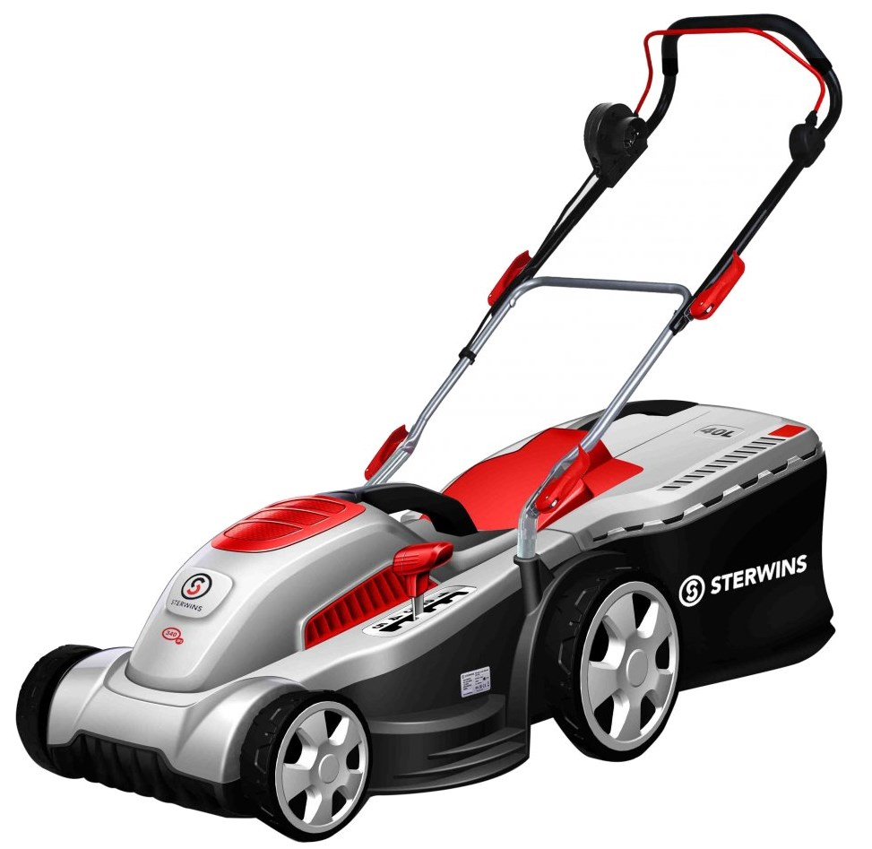

Sterwins 340 EP
El Sterwins 340 EP és un tallagespa elèctric amb una amplada de tall de 34 cm i una potència de 1200 W, ideal per a jardins de petit i mitjà mida. Aquest model ofereix un rendiment constant i eficient, facilitant el manteniment del teu jardí amb comoditat.
El sistema d'ajust d'alçada de tall de 6 posicions permet adaptar el tall a les teves necessitats específiques, amb alçades de tall entre 20 i 70 mm. La bossa de recollida de 35 litres garanteix un jardí net i ordenat, mentre que el seu disseny compacte i lleuger facilita la maniobrabilitat i el transport.
No esperis més i adquireix el teu Sterwins 340 EP per mantenir el teu jardí en perfectes condicions.
Compra ara